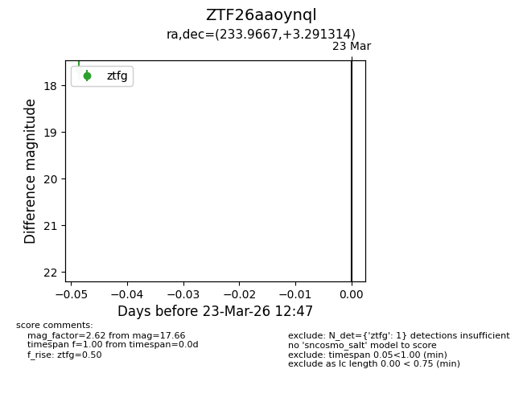
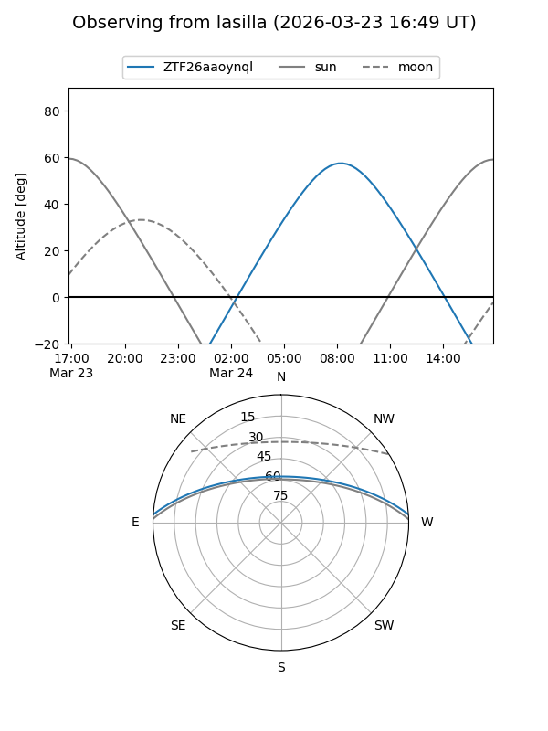
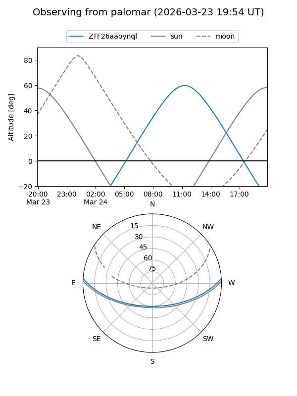

ZTF26aaoynql
Target ZTF26aaoynql at 2026-03-23 12:49
Aliases and brokers:
FINK: link
Lasair: link
ALeRCE: link
alt names
ZTF26aaoynql (ztf,fink_ztf)
Coordinates:
equatorial (ra, dec) = 233.9667,+3.29131
equatorial (HMS+DMS) = 15:35:52.02,+03:17:28.73
galactic (l, b) = (8.9560,+44.07995)
Flags:
Photometry:
last ztfg=17.66
1 ztfg detections
Lightcurve

Visibility


Additional plots